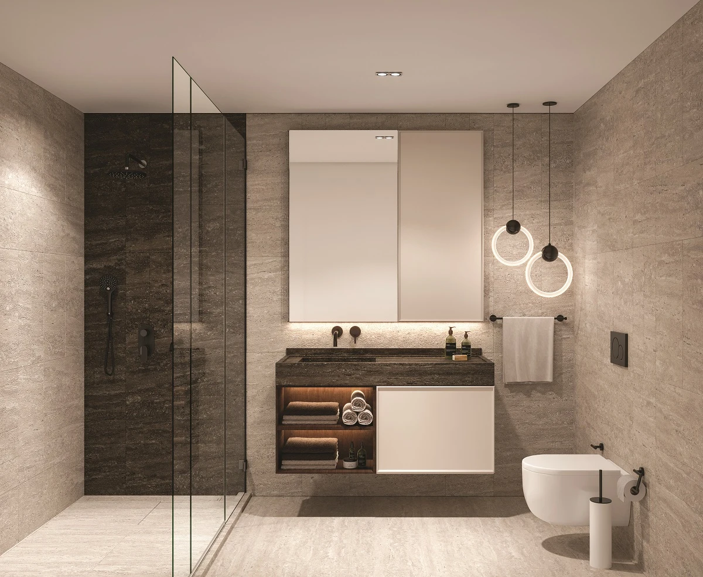

Mega Garden Park
A residential project in Veliefendi, Zeytinburnu, near Çırpıcı City Park. Its published concept combines contemporary apartment buildings, landscaped surroundings and access to the district’s shopping and cultural destinations.
Photo gallery

Official architectural illustrations; these images do not show the current construction condition.
Living spaces
The published residential concept features bright interiors and smart-home technology. The surrounding area provides parkland, sports and recreation spaces, shops and cafés.
Veliefendi · Zeytinburnu · Istanbul
Veliefendi Mahallesi, Prof. Aziz Ergin Caddesi, Zeytinburnu. The project website references Fişekhane, Forum shopping destinations, Veliefendi Hippodrome and the Marmara coastal area.
Choose your home
Request the current apartment selection, price and payment options. Compare the exact unit, view and included services before arranging your purchase.